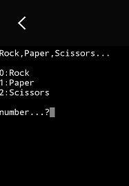
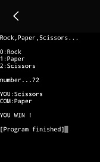
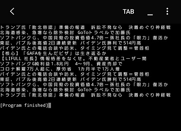

理工学部電子機械系を卒業し、電子工学、機械工学や制御、情報処理など幅広く履修し、また基本的なPC操作(WordやExcel、PowerPoint、Psimなど)もできます。
Web分野では大学講義内で学んだ基礎的なC言語のほか、独学ではありますが基礎的なHTML、CSS、PHP、Rubyも扱え、
現在は今後より発展が期待されるAI、DB分野への理解を深めるためSQLやPython、及びより重要になっていくであろうWebマーケティング分野の学習を進めています。
何事にもまずはチャレンジしていく性格です。大学在学時から地域の教育ボランティアやアメリカでのホームステイなど様々なことに挑戦してきました。
部活動などは高校1年時から大学卒業時まで7年間軽音楽部に所属し継続的に活動しました。
転職後も仕事に対し積極的に取組み、興味をもって多くの事を吸収していきたいです。
語学力に関しましては、大学2年時のアメリカコロラド州でのホームステイからブランクはありますが、
普段から言語交換を目的としたSNSで英語圏の方とチャットなどをしています。
今後さらに向上し広く活躍できるよう努力していきます。
療養もあり社会人として周りから出遅れているという自覚はありますがだからこそ貪欲に努力していきたいと思っています。
スキル項目
＜HTML、CSSやRuby＞
このサイトのように基礎的なHTMLなどのコーディングができます。またRuby on Railsを使った簡易的なSNSを作れます。
いずれもプログラミング学習サイトプロゲート（https://prog-8.com/）や参考書籍を用いた独学により学習しています。
コーディングにはAtomを用いています。
いずれもプログラミング学習サイトプロゲート（https://prog-8.com/）や参考書籍を用いた独学により学習しています。
コーディングにはAtomを用いています。
＜PHP＞
PHP言語を使い基本的なオブジェクト指向を身に着けるためカフェのメニュー一覧、詳細ページ、注文金額の計算などが表示できるWebサイトを作りました。
開発環境にはAtomを使い、ローカルサーバ表示のためにXAMPPを用いています。（サイトに使用している写真は各々フリー写真です）
ローカル環境で表示した際の動画を下記に示しています。（サイトの公開に利用しているGithubではmp4非対応であるためgif画像として掲載しています）
開発環境にはAtomを使い、ローカルサーバ表示のためにXAMPPを用いています。（サイトに使用している写真は各々フリー写真です）
ローカル環境で表示した際の動画を下記に示しています。（サイトの公開に利用しているGithubではmp4非対応であるためgif画像として掲載しています）

＜Python＞
Webスクレイニングを用いたデータの収集により為替などの自動売買を可能としたり、よく読むページの情報を一括でまとめたりするためPythonを学び始めました。
まず初めにPythonの基礎的な知識を身に着けるためにジャンケンゲームを制作しました。
その後簡単なWebスクレイニングをできるようになり現在そのデータをどのように扱い、自動化していくかを学習中です。
なお、開発環境は手軽に開発したかったためAndroidのアプリであるPydroid3を用いています。
まず初めにPythonの基礎的な知識を身に着けるためにジャンケンゲームを制作しました。
その後簡単なWebスクレイニングをできるようになり現在そのデータをどのように扱い、自動化していくかを学習中です。
なお、開発環境は手軽に開発したかったためAndroidのアプリであるPydroid3を用いています。


数値入力によるジャンケンゲーム
Webスクレイニングではnewspicks.comのニュースタイトル部分を抽出できるようプログラムを組みました。

Webスクレイニング結果（引用元：newspicks.com)
今後は数値データをスクレイニングし、それらデータを自動で管理、活用していけるようにしていきたいです。
＜マーケティング分野＞
Webに関する学習を進めるにつれ、Webマーケティングをはじめデータサイエンス分野へも興味を抱き、
まずは効果測定に広く使われているアナリティクスの知識をつけるためGoogleアナリティクス個人認定資格を取得しました。
今後もマーケティングやECサイトの運営についても学んでいきたいです。
まずは効果測定に広く使われているアナリティクスの知識をつけるためGoogleアナリティクス個人認定資格を取得しました。
今後もマーケティングやECサイトの運営についても学んでいきたいです。
＜今後の展望＞
エンジニアやマーケターなどWebやITの専門的な知識を深めつつ総合的な力を身に着けていきたいです。
上記した言語をさらに深め専門性を高めつつ、SEOの知識やサーバーなどのインフラ知識も身に着け広く柔軟性を持って活躍していけるようになりたいです。
上記した言語をさらに深め専門性を高めつつ、SEOの知識やサーバーなどのインフラ知識も身に着け広く柔軟性を持って活躍していけるようになりたいです。